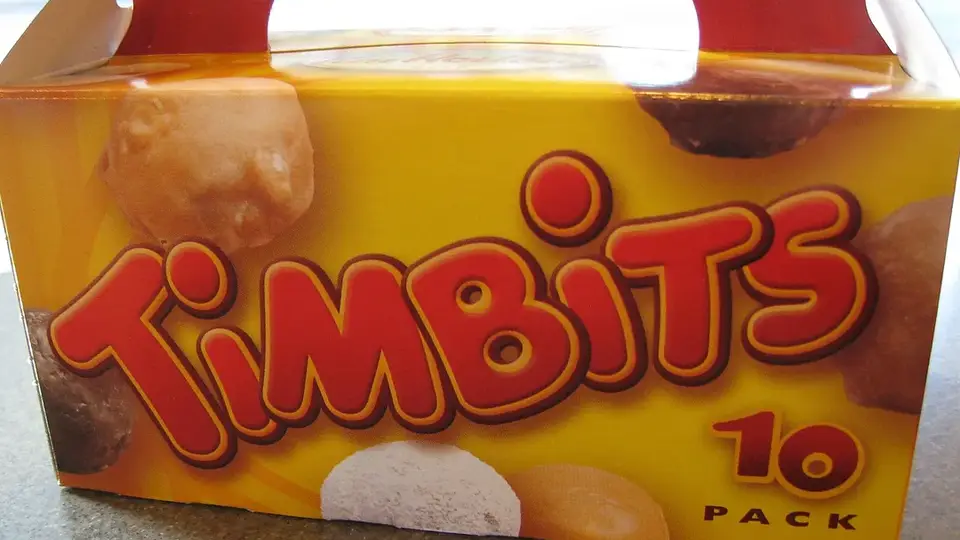

Unofficial fan guide - not affiliated with Tim Hortons
The Dutchie, Walnut Crunch, bread bowls and more: when each one left the menu, which ones have come back, and why Tim Hortons drops items.
Full Menu / Blog / Tim Hortons Discontinued Items

Tim Hortons has dropped dozens of items over the years. The best-known are the Dutchie, the Walnut Crunch, the Blueberry Fritter, soup in a bread bowl, the chicken salad croissant, cake slices and English Toffee. Some return for short runs. The Walnut Crunch and Dutchie last came back in January 2024.
This table lists the discontinued items Canadians ask about most often, when they left the menu, and whether they've been back since. Tim Hortons doesn't publish a list of discontinued items. The dates below come from news coverage and the company's own announcements. A blank "last seen" means we found no confirmed return.
| Item | Type | Left the permanent menu | Last seen | Status (October 2026) |
|---|---|---|---|---|
| Dutchie | Donut | Early 2000s | January 2024 (60th anniversary) | Gone, occasional retro returns |
| Walnut Crunch | Donut | 2011 | January 2024 (60th anniversary) | Gone, occasional retro returns |
| Blueberry Fritter | Donut | 2014 | January 2026 | Gone, returns as a limited-time item |
| Cherry Stick | Donut | Before 2013 | May 2023 | Gone |
| Cinnamon Sugar Twist | Donut | Not confirmed | January 2024 | Gone |
| Chocolate Eclair | Donut | 1980s–90s | — | Gone |
| Dutchie Timbit | Timbit | February 2014 | — | Gone |
| Bread bowl (soup or chili) | Lunch | After 2014 | — | Gone |
| Chicken Salad Croissant | Lunch | Early 2020s | — | Gone |
| Turkey Bacon Club | Lunch | Not confirmed | — | Gone |
| Beyond Meat breakfast sandwiches | Breakfast | Burgers September 2019, sandwiches January 2020 | — | Gone |
| Maple Pecan Danish | Bakery | After COVID-19 | — | Gone |
| Cake slices | Bakery | Not confirmed | — | Gone |
| English Toffee | Hot drink | About 2016 | — | Gone |
| Hot smoothies | Hot drink | Not confirmed | — | Gone |
| Honey mustard | Sauce | About 2023 | September 16, 2026 | Back |
| Oatmeal Raisin Cookie | Cookie | Not confirmed | Early 2026 | Back (announced February 2026) |
"Not confirmed" means news reports mention the item as gone but don't give a date. We haven't guessed one.
Most of the items people miss are donuts from before 2003. That year, Tim Hortons stopped frying donuts from scratch in each store. Instead it switched to factory-made donuts that are partly baked, frozen and finished in each restaurant. Recipes that didn't suit that process slowly left the menu. We explain that process in are Tim Hortons donuts baked or fried.
The Dutchie is a square, yeast-raised donut with raisins and a sugar glaze. Tim Hortons created it in 1964, and it was one of the two original baked goods on the menu along with the Apple Fritter. It left the permanent menu in the early 2000s. The Dutchie Timbit lasted until February 2014, when it was dropped because not enough people bought it.
The Dutchie has come back twice for short runs. It returned in June 2017 for Canada's 150th birthday and again on January 10, 2024, for the chain's 60th anniversary. The Apple Fritter, the Dutchie's original menu partner, is still on the menu at $2.09.
The Walnut Crunch is a dark, rectangular chocolate cake donut with a sugar glaze and chopped walnuts. It was dropped in 2011. It is the discontinued donut Canadians ask for most, and it has had more comebacks than any other.
It came back with the Cherry Stick on May 31, 2023, for National Donut Day. Reports said the two donuts sold more than 200,000 on their first day back. It returned again in January 2024, when it was the best-selling of the four retro donuts. In Atlantic Canada, people bought almost three times as many Walnut Crunches as Dutchies.
The Blueberry Fritter is a fritter filled with blueberry and finished with a sugar glaze. It was first dropped in 2014 and has since come back several times as a limited-time item, most recently in January 2026. Many longtime fans say the newer versions don't taste like the one from the 2000s.
The Cherry Stick is a log-shaped glazed donut with cherry flavour. It hadn't been sold for more than 10 years when it came back for a short run in May 2023. That run covered every Quebec location and participating restaurants elsewhere. The Cinnamon Sugar Twist came back once, in January 2024.
The Chocolate Eclair is older. It was popular in the 1960s and was phased out in the 1980s or 1990s. It won Tim Hortons' 2014 "Bring It Back" vote, but it hasn't returned to the regular menu since. In 2020 Tim Hortons released a Chocolate Hazelnut Eclair Dream Donut, inspired by the original. Readers also remember these donuts, though no date has been confirmed for when they disappeared:
Many discontinued lunch items went because they took longer to make. Others went because Tim Hortons replaced them with hot, heavily advertised items like the Loaded Wraps and Bowls on today's lunch menu.
Bread bowls are the item Canadians mention most when they're asked what they miss. They were oven-baked bread bowls filled with soup or chili, like chicken stew or cream of broccoli. In 2001 a bread bowl was part of a $5.49 combo with a medium coffee and a donut. It lost Tim Hortons' 2014 "Bring It Back" vote and disappeared some time after that. A Change.org petition to bring it back has fewer than 200 signatures.
The Chicken Salad Sandwich on a croissant first appeared in 2006 as a chicken salad wrap. Stores made it fresh every day with white chicken, onion, celery, pimentos, mayo and pepper. It was dropped in the early 2020s.
The Turkey Bacon Club, the BLT Club on a long bun and the Grilled Cheese are gone too. The Turkey Bacon Club's honey mustard was swapped for mayo around 2018, and the sauce was gone by about 2023. Honey mustard came back on September 16, 2026, but the club didn't come back with it.
Tim Hortons added Beyond Meat items across Canada in June 2019. There were two breakfast sandwiches and a wrap, followed by two plant-based burgers in July. The burgers were gone by September 2019. On January 29, 2020, the breakfast sandwiches were pulled from Ontario and British Columbia, the last two provinces selling them. Restaurant Brands International said "our guests choose to stay with the meat option," and that there wasn't enough demand to keep it.
The Maple Pecan Danish arrived in 2003 and was quietly removed after the COVID-19 pandemic. Tim Hortons also used to sell slices of cake, including Black Forest and coffee flavours, which former staff remember fondly. Oatmeal is also gone, and it ranks in the top six of the items Canadians want back.
Fewer drinks have been dropped than donuts, and the ones that went were mostly sweet hot drinks. The current coffee menu now covers that space with French Vanilla, hot chocolate and seasonal lattes.
English Toffee was a sweet hot toffee drink. In the early 2000s it sat next to French Vanilla and hot chocolate, and it was officially dropped around 2016. A toffee version is still on the menu: the Caramel Toffee Latte is part of the espresso lineup.
Hot smoothies, which were warm fruit drinks, rank seventh on the list of items Canadians want back. Other drinks people miss include the raspberry hot smoothie, the strawberry banana smoothie, apple cider, mango lemonade, blueberry white tea and peach juice. The English Toffee Cappuccino is gone too.
Tim Hortons brings back old favourites as short promotions, usually around an anniversary or a holiday. They almost never return for good. Here is every confirmed comeback we found:
| Date | What came back | Occasion | How long |
|---|---|---|---|
| June 2017 | Dutchie | Canada 150 | Limited time |
| May 31, 2023 | Walnut Crunch, Cherry Stick | National Donut Day | Limited time |
| January 10, 2024 | Dutchie, Walnut Crunch, Blueberry Fritter, Cinnamon Sugar Twist | 60th anniversary | Limited time |
| January 2026 | Blueberry Fritter | Limited-time offer | Limited time |
| Early 2026 | Oatmeal Raisin Cookie | Announced in the February 2026 menu plan | Not stated |
| February 23, 2026 | Rolling up the rim (Roll Up To Win) | Contest | Part of future contests |
| September 16, 2026 | Honey mustard | Most-requested sauce | Not stated |
If you're hoping to see a favourite return, watch January (the anniversary month) and late May to June (National Donut Day falls in early June). Every confirmed donut comeback so far has started in one of those windows.
Tim Hortons rarely explains why an item goes. When it has, the reason was low sales. For the Beyond Meat sandwiches it said it "did not see enough demand to keep it as a permanent item." The Dutchie Timbit went in 2014 for the same reason.
The other reasons are inferred from how the menu has changed. Factory-made donuts since 2003 favour recipes that freeze well. Items that slow down the kitchen, like bread bowls or sandwiches made fresh every day, don't fit a drive-thru-first business. After COVID-19, many chains, Tim Hortons included, cut back their menus. Items like the Maple Pecan Danish disappeared then.
Customer demand has brought items back before. Tim Hortons said honey mustard was "one of the most requested items." It also brought back the Walnut Crunch and Cherry Stick in 2023 by "popular demand." The most direct way to ask is through the feedback form in the Tims app or on the Tim Hortons website. Name the item you want back.
Petitions help less than you'd expect. The bread bowl petition on Change.org has fewer than 200 signatures, which is too few to show demand. Public votes like the 2014 "Bring It Back" campaign have done more. Watch the Tim Hortons app around January and June for limited-time retro items.
The best-known are the Dutchie, Walnut Crunch, Blueberry Fritter, Cherry Stick, Chocolate Eclair and Cinnamon Sugar Twist. Others include the Orange Twist, Honey Stick, Chocolate Cream, Banana Cream and Powdered Jelly. A few of these come back for short runs, but none are on the permanent menu.
Not permanently, as of October 2026. The Walnut Crunch came back for limited runs in May 2023 and January 2024, and it was the best-selling retro donut both times. It's the most likely donut to return in a future promotion.
No. The Dutchie left the permanent menu in the early 2000s. It has only come back twice, in June 2017 and January 2024, each time for a limited period.
Bread bowls disappeared some time after 2014, when they lost Tim Hortons' "Bring It Back" vote. Tim Hortons never announced an exact end date. Soup and chili in a bread bowl is still the discontinued item Canadians ask about most.
Yes. The chicken salad croissant was dropped in the early 2020s. It first appeared in 2006 and was made fresh in store every day. No version of it is on today's lunch menu.
Yes. Honey mustard returned on September 16, 2026, after it was dropped around 2023. Some customers say the new version tastes different from the original.
English Toffee, the sweet hot toffee drink, was discontinued around 2016. The closest drink on the menu today is the Caramel Toffee Latte.
Not enough people ordered it. The burgers went in September 2019, and the breakfast sandwiches were pulled from the last two provinces on January 29, 2020. Tim Hortons' parent company said customers preferred the meat options.
Yes. The Apple Fritter is one of the original 1964 Tim Hortons donuts, and it's still on the menu for $2.09. In 2026 Tim Hortons said it was adding more apples to it.
Yes. In its February 2026 menu announcement, Tim Hortons listed the Oatmeal Raisin Cookie among its returning items. Check the Tims app for your local store, because availability can vary.
It never left for good, but rolling up the rim on paper cups was paused from 2020. Paper contest cups returned in 2025, and in February 2026 Tim Hortons said rolling up the rim will stay part of its Roll Up To Win contest. See our Roll Up the Rim guide.
This is an independent, unofficial guide. It is not affiliated with, endorsed by, or sponsored by Tim Hortons or Restaurant Brands International. Tim Hortons does not publish a list of discontinued items, so dates come from news coverage (Narcity, Yahoo Canada, Global News) and Tim Hortons' own announcements, as checked in October 2026. Current prices come from our menu pages. Limited-time items vary by location. See Sources.